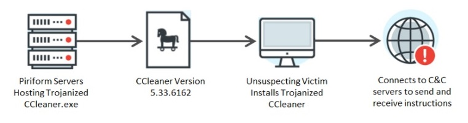
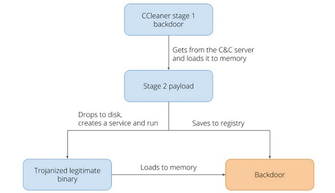
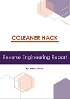

CCleaner is a legitimate system clean-up software solution which fell victim to hackers, who inserted rouge code into the program’s free versions and than pushed out as an genuine update which was downloaded thousands of times.
CCleanerCCleaner is a popular file clean-up and performance optimization utility for the windows operating system. It removes unused files, allowing windows to run faster and free up valuable hard disk space. It cleans traces of your online history and also features a registry cleaner, cleans temporary files to optimize and speed up your computer. It is available in 32bit and 64bit with the option of a free or a professional version.
Avast who owns CCleaner discovered its download servers had been hacked into and malicious code had been injected to two versions of its CCleaner application installers. This allowed the legitimate signed version of CCleaner 5.33 and cloud version 1.07 installers to contain a multi-stage malware payload that rode on top of the installation of CCleaner. These versions of CCleaner were available to the general public between August 15 and September 12, 2017. Avast believes it was able to prevent the breach harming customers, and users are now safe as its investigation indicates it was able to disarm the threat before it was able to do any harm.
Supply Chain AttackThe attack on CCleaner is known as a supply-chain malware attack, it’s a cyber-attack that seeks to damage an organization by targeting less-secure elements in the supply chain of the company.
This type of attack is a well thought out attack, the hackers would have been monitoring the organization for a period of time, looking for weak points, and leveraging its systems to gain maximum advantage. Spyware was downloaded as well as the legitimate CCleaner application, sending back user information to the cybercriminals C&C servers. The hackers were looking for high profile targets, large tech organizations, such as Google or Microsoft, which they could steal source code, software applications, or any data they may deem useful.
Application HistoryCCleaner, originally named Crap Cleaner when the small company Piriform released it in 2004. The app started life as a registry cleaner, which removed old Windows Registry entries after users have uninstalled old apps, which would improve Windows OS speed. Over the years the app evolved and now supports a trove of other features. It can remove temporary or old files left by removed apps, perform automatic updates for other apps and block ad trackers, etc. CCleaner is now owned by Czech cybersecurity firm Avast, who acquired Piriform in 2017 and had to deal with the PR fallout throughout 2017 and 2018.
Malware DescriptionCCleaner is a legitimate system clean-up software solution which fell victim to hackers who inserted rouge code into the program’s free version, sometime between March 11th and July 4th 2017. It is believed a group of Chinese state-sponsored hackers breached Piriform's network via a TeamViewer account, searched for CCleaner distribution servers, and then released a CCleaner update tainted with malware. Avast says about 2.27 million people ran the infected software. This happened prior to Avast’s acquisition of Piriform on July 18,
Arrival and Installation: The distribution of the compromised CCleaner came from the actual website of Piriform. Hackers were able to compromise the CClenaner installer binaries hosted in the website which resulted to the distribution of the malicious software to the unsuspecting users. Since it came from a legitimate source and digitally signed, it would be almost impossible for users to identify that software has been modified to perform malicious activity.
Two stage Malware: The malware came in two stages, the first stage was designed to collect non-sensitive information from CCleaners users and was also used as a downloader for the second stage. The second stage was used to download a binary, only if the hackers deemed the user a high value target.
Stage 1: The malware creates a backdoor and uses a hardcoded C2 server to send information about the affected system and fetch the second payload. The first payload when executed installed a piece of spyware called Foxif. This program builds a complete picture of the infected device and a complete picture of the local network. The malware gathers information of the running processes, installed software, mac addresses and network interfaces. This information is useful for targeting vulnerable system, running outdated versions of programs containing known vulnerabilities. The payload included download capabilities for the second stage.
Stage 2: The second payload was a malicious binary called Trojan.Nyetya, when dropped is automatically loaded, created a service and ran on the system. This payload includes patched legitimate software products, used to unzipping files and uninstall antivirus software. Creates a backdoor to get commands from its C&C servers, it uses a completely different control network than the first stage. Some of the user information passed to the cybercriminals is:
* The users keystrokes
* Saved passwords used in browsers
* Financial information
* Any frequently used MS Word documents
The complex code is heavily obfuscated and uses anti-debugging tricks to conceal its inner workings. Only 40 PC’s were ever affected by this second payload, a possible reason was Hackers were looking for computers installed on the networks of one the several major tech companies, such as Google or Microsoft.
The Third stage: After further investigations of the 2017 attack, Avast found a possible third stage of the attack in 2018. This stage would install ShadowPad malware on compromised computers. ShadowPad is a cyberattack platform that cybercriminals deploy in victims networks to gain remote access capabilities. There is no evidence that this stage actually affected any computers. The possible reason this stage never took place, could be because of the fast detection and speedy clean-up of the attack by Avast.
In 2019 several attempts by Hackers to gain access to CCleaner servers once again, this time compromising its main internal network in the process and yet again, seeking to tamper with CCleaner releases. A product by a security vender is the last place people will expect to find comprised software, we expect such companies to maintain and have security check on their own products. Accidents like this demonstrate that no one, not even a security vendor can escape such attacks.
For a more detailed and technical analysis on this attack I created a CCleander Hack: Reversing Engineering Report . Available here.
|  Read More | CCLEANER HACK: REVERSE ENGINEERING REPORTThis report is a deep dive into the CCleaner Hack looking at the technical aspects of the attack and how it was accomplished. Reverse Engineering the installer I can show each step of the attack process, while also showing examples of how it was done. This is a very complex attack involving many stages. The objective of this report is to make this more understandable while benefitting other Malware Researchers. |